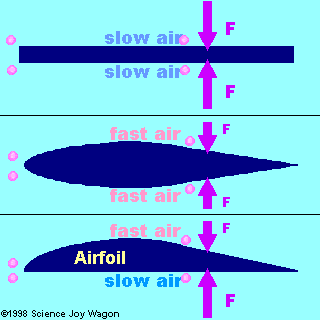

So I have to render my sailing notes digital.
Otherwise I will loose them in time and I will not be able to withdraw them in the future anymore.
So this is a legacy stuff migration.
By now I do everything digitally and everything flows directly more less into this blog such that I can archive and withdraw it.
In the past it did not used to be the case and now you are paying the price for it. You want to pay it though as sailing is supposed to be your main leisure in the coming decades such that it makes sense to organize your material relating to it.
So this post treats the venturi-effect. This is the ultimate effect why you are able to sail against the wind and still move in the direction where the wind is coming.
It is also the same effect that planes use to take off and stay high up in the air. Helicopters also use it as well.
So it is a nice concept to understand also when you fly and highly in use in lots of this mechanical physics based stuff.
So basically the two say the same stuff - at least when I read wikipedia.
Do not want to loose too much time being very formal here.
But basically the idea is the following:
Bernoulli's principle Bernoulli's principle states that an increase in the speed of a fluid occurs simultaneously with a decrease in static pressure or a decrease in the fluid's potential energy. (Wikipedia)
The Venturi effect is the reduction in fluid pressure that results when a fluid flows through a constricted section (or choke) of a pipe. (Wikipedia)
So they state essentially the same stuff and it makes also intuitive sense checking at the image - i.e. my common sense would have expected something like that.
Now given the understaning of this principle it will be possible for you to understand the idea of the sails.
In order to understand it - consider the following picture:
Given the above you will have two forces resulting on your sail:
The resulting force will be a vector in between.
That is the resulting vector pushing your boat forward.
It it clear now why you cannot sail completely upwind… need to have the wind properly cutting your sails.
Note now that in sailing boats you double this effect down by playing with multiple sails.
Consider the following image:
You see that the jibe will help to make the pressure on the higher part of the main sail even lower by pushing even more air into there.
This will make the difference in pressure even higher and augment the lift on the main.
Note that there are two effects - the smaller the distance between the sail and the narrower the passage of air will increase as well the velocity on the inner-side of jib decreasing its effect.
The benefit of the main is likely higher and this is why it works.
I mean the last part is a construct of mine. Would have to test it empirically… maybe there is sufficient space but I guess this is the reason why there is not always an added benefit in trimming the sails or adding a further sail - say for instance the Mizzen Staysail that people declare more useful for boat stabilization rathere than power increase.